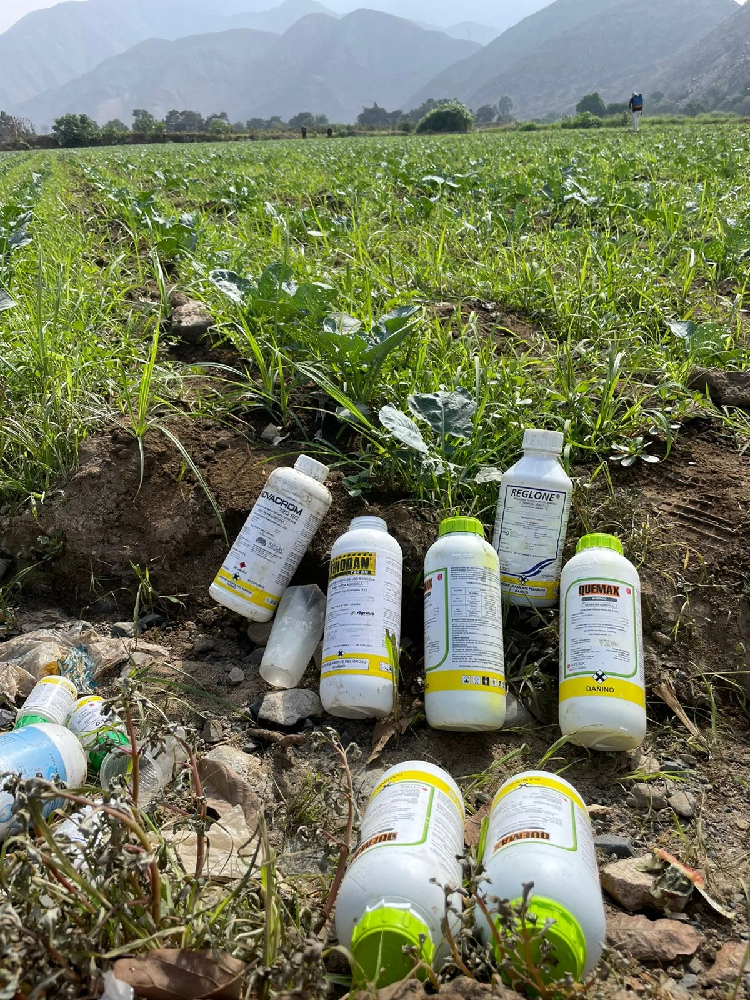
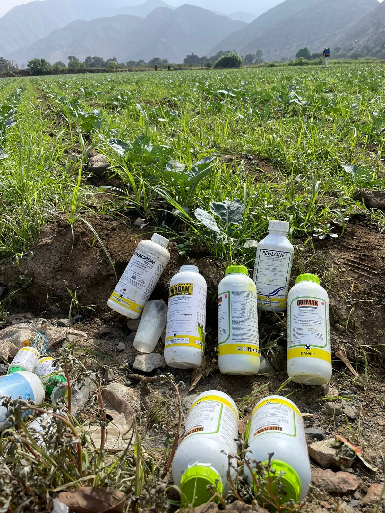
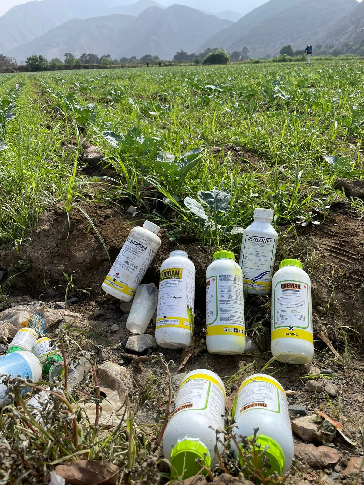

The Problem
Long-term pesticide use degrades soil, reduces biodiversity, contaminates water sources, and diminishes crop quality.
 

Raúl, a corn farmer from Yucatán, saw his land degrade after years of pesticide use. Biomixtures may hold the key to restoring it.
Raúl has cultivated corn in Yucatán for decades. Without knowing the long-term effects, pesticides gradually reduced the fertility of his soil. Now, he is part of a pioneering project using biomixtures to bring life back to the land.
Long-term pesticide use degrades soil, reduces biodiversity, contaminates water sources, and diminishes crop quality.

Biomixtures are a natural combination of soil, compost, and plant residues, acting as a biological filter that breaks down pesticides and restores nutrients to the soil.

We are testing biomixtures with corn, melon, and common pesticides in the region, both in the lab and in the field.
With biomixtures, healthier soils, better harvests, and cleaner water sources are within reach. Even heavily degraded lands can recover over time.